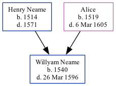

Willyam Neame 1540 - 1596
[ Home ] | [ Calendar ] | [ Surnames Index ] | [ Family History ]The child of Henry Neame and Alice, Willyam Neame, the twelve times great-uncle of <a href="I1.html">Nigel Horne</a>, was born in Ringleton, Woodnesborough, Kent, England in 1540<span class="citation">1</span>.<p>He died on Mar 26, 1596 in Ringleton<span class="citation">1,2</span> and was buried in Woodnesborough, Kent, England on May 29, 1596<span class="citation">2</span>.
Parents
- Henry was born in 1514
- Alice was born in 1519
Citations
- OneWorldTree Online publication - Provo, UT, USA: The Generations Network, Inc.
- Kent, England, Tyler Index to Parish Registers, 1538-1874 Online publication - Provo, UT, USA: Ancestry.com Operations, Inc., 2010. This collection was indexed by Ancestry World Archives Project contributors.Original data - Frank Watt Tyler. The Tyler Collection. Canterbury, Kent, England: The Institute of Herald
Family Tree
Generated by Ged2Site. Last updated on Jul 20, 2025